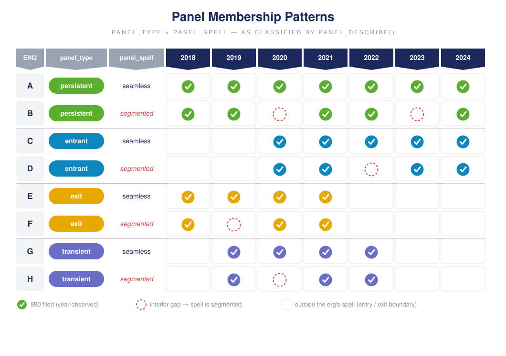
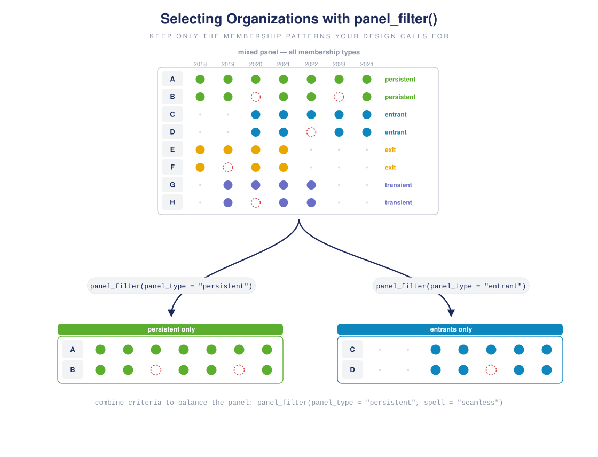
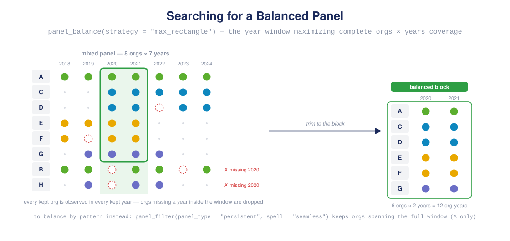
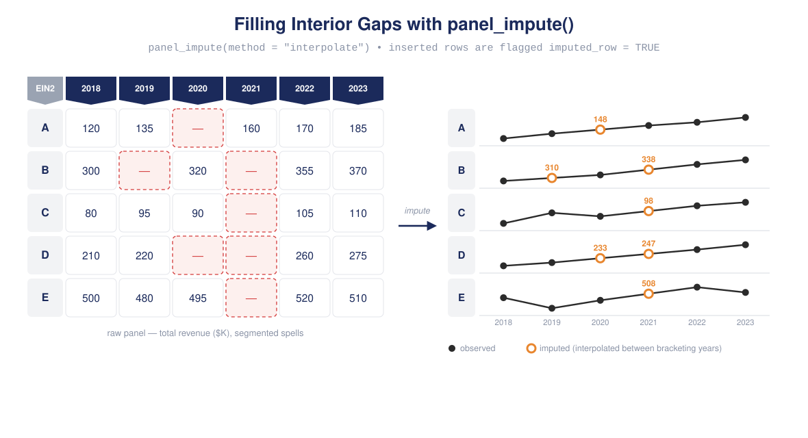

Getting started with panel990
getting-started.Rmdpanel990 assembles IRS 990 efile tables into research-ready panels and gives you a small vocabulary of verbs for describing, selecting, and cleaning them. This tour walks the whole pipeline in six steps:
- Build the panel from the raw efile tables
- Identify each organization’s membership pattern
- Filter to the patterns your design calls for (including a balanced panel)
- Impute missing interior years
- Smooth noisy series
- Reconcile the accounting identities that cleaning disturbs
Each step below pairs a short code example with a picture of what the verb does. The download step needs network access, so it is shown but not run; every other example runs on a small in-memory panel.
1. Build the panel
panelize() is the one-shot assembler: it downloads the tables you name for the years you name, merges them within each year, stacks the years, and (optionally) attaches organization traits from the Business Master File:
panel <- panelize(
tables = c("P00", "P01", "P08", "P09", "P10"), # header, summary, revenue,
years = 2019:2022, # expenses, balance sheet
bmf = TRUE
)Within each year the five tables are joined into one wide row per filing. Every table carries the same filing keys (EIN2 × TAX_YEAR × OBJECTID), and the join is a full outer join, so a filing missing from one part keeps its row:

Five core 990 tables joined on the filing keys into one wide row per filing
The per-year tables share a harmonized layout, so they stack into one long panel with one row per organization-year:

Merged per-year tables stacked into one long panel with one row per organization-year
bmf = TRUE then left-joins the BMF on EIN2, appending time-invariant organization traits (name, NTEE, subsection, geography) to the right of the 990 fields and broadcasting them to every year the organization appears:

BMF organization traits appended to the right of the 990 panel by a left join on EIN2
Everything after this point works the same on a panel object or on any plain data frame with an id and a year column, so the rest of the tour uses a small in-memory panel:
2. Identify panel types
Organizations rarely appear in every year of a panel. panel_describe() classifies each one on two independent axes:
-
panel_type(boundary) — which edges of the window the org touches:persistent,entrant,exit,transient. -
panel_spell(continuity) — whether its observed years are consecutive (seamless) or contain interior gaps (segmented).

The eight panel membership patterns: panel_type crossed with panel_spell
panel_describe(panel, time = "TAX_YEAR", id = "EIN2")
#> <panel_summary> 4 orgs x 5 years (2018-2022)
#>
#> panel types (org counts by spell):
#> panel_type seamless segmented total pct
#> persistent 1 1 2 50
#> entrant 1 0 1 25
#> exit 1 0 1 25
#>
#> org-years by type:
#> year persistent entrant exit
#> 2018 2 0 1
#> 2019 1 0 1
#> 2020 1 1 1
#> 2021 1 1 0
#> 2022 2 1 0A spans the window with no gaps (persistent + seamless — the balanced case), B enters late, C exits early, and D spans the window but skips the middle (persistent + segmented).
3. Filter panel types
panel_filter() keeps the rows of the organizations whose classification matches. It classifies internally, so you just name what you want:

panel_filter() selecting persistent organizations and entrants out of a mixed panel
# organizations that span the whole window
unique(panel_filter(panel, panel_type = "persistent",
time = "TAX_YEAR", id = "EIN2")$EIN2)
#> [1] "A" "D"
# new entrants
unique(panel_filter(panel, panel_type = "entrant",
time = "TAX_YEAR", id = "EIN2")$EIN2)
#> [1] "B"Searching for a balanced panel
A balanced panel is a rectangle: every retained organization observed in every retained year. You can select it by pattern — panel_filter(panel_type = "persistent", spell = "seamless") — or let panel_balance() search for the year window that maximizes retained observations:

panel_balance() trimming a mixed panel to its largest fully observed block of organizations and years
best <- panel_balance(panel, strategy = "max_rectangle",
id = "EIN2", time = "TAX_YEAR")
attr(best, "balance")
#> $years
#> [1] 2018 2019 2020
#>
#> $n_years
#> [1] 3
#>
#> $orgs_kept
#> [1] 2
#>
#> $orgs_dropped
#> [1] 24. Impute missing cases
panel_impute() inserts an organization’s missing interior years and fills their numeric fields from the observations bracketing each gap (method = "interpolate", "mean", "locf", or "nocb"). Inserted rows are flagged imputed_row = TRUE so they are never mistaken for filings:

panel_impute() filling interior gaps, shown as a table with missing cells and as trend plots with imputed points
filled <- panel_impute(panel, vars = "revenue", method = "interpolate")
filled[filled$EIN2 == "D", c("EIN2", "TAX_YEAR", "revenue", "imputed_row")]
#> EIN2 TAX_YEAR revenue imputed_row
#> 12 D 2018 40 FALSE
#> 13 D 2019 41 TRUE
#> 14 D 2020 42 TRUE
#> 15 D 2021 43 TRUE
#> 16 D 2022 44 FALSED’s 2019–2021 hole is interpolated between its 2018 and 2022 filings. (The researcher-facing wrapper panel_complete() fills every segmented span in one call.)
5. Smooth values
panel_smooth() replaces a numeric field with a rolling weighted average taken within each organization. window sets how many years are averaged; weights sets how much the focal year keeps ("equal", "half", or "decay"):

panel_smooth() applied with different window and weights settings, compared against the raw series
noisy <- data.frame(
EIN2 = "A",
TAX_YEAR = 2016:2022,
revenue = c(10, 12, 11, 50, 13, 12, 11) # one-year spike
)
sm <- function(w, wt) round(panel_smooth(noisy, "revenue", window = w,
weights = wt, verbose = FALSE)$revenue, 1)
data.frame(year = noisy$TAX_YEAR, raw = noisy$revenue,
w3_equal = sm(3, "equal"), w5_equal = sm(5, "equal"),
w3_decay = sm(3, "decay"))
#> year raw w3_equal w5_equal w3_decay
#> 1 2016 10 11.0 19.2 10.7
#> 2 2017 12 11.0 19.2 11.2
#> 3 2018 11 24.3 19.2 21.0
#> 4 2019 50 24.7 19.6 31.0
#> 5 2020 13 25.0 19.4 22.0
#> 6 2021 12 12.0 19.4 12.0
#> 7 2022 11 12.0 19.4 11.66. Reconcile accounting principles
990 financials carry deterministic identities — contributions components sum to the contributions total, revenue lines sum to total revenue, assets equal liabilities plus net assets. Cell-level cleaning (partial imputation, rounding, smoothing over filer errors) can leave rows that violate them. accounting_check() finds the violations and reconcile() repairs them with the smallest possible adjustment, holding the values you trust fixed:

Independently smoothed revenue components no longer sum to total revenue; reconcile() restores the identity
row <- data.frame(
EIN2 = "A", TAX_YEAR = 2020,
F9_08_REV_CONTR_FED_CAMP = 100, F9_08_REV_CONTR_MEMBSHIP_DUE = 50,
F9_08_REV_CONTR_FUNDR_EVNT = 30, F9_08_REV_CONTR_RLTD_ORG = 20,
F9_08_REV_CONTR_GOVT_GRANT = 180, # imputed; the org reported a 500 total
F9_08_REV_CONTR_OTH = 90, # imputed
F9_08_REV_CONTR_TOT = 500
)
accounting_check(row) # contributions short by 30
#> EIN2 TAX_YEAR identity residual ok
#> 1 A 2020 rev_contributions_subtotal 30 FALSE
rec <- reconcile(row, fixed = setdiff(names(row), c("F9_08_REV_CONTR_GOVT_GRANT",
"F9_08_REV_CONTR_OTH")))
rec[, c("F9_08_REV_CONTR_GOVT_GRANT", "F9_08_REV_CONTR_OTH", "F9_08_REV_CONTR_TOT")]
#> F9_08_REV_CONTR_GOVT_GRANT F9_08_REV_CONTR_OTH F9_08_REV_CONTR_TOT
#> 1 195 105 500
accounting_check(rec) # identities restored
#> [1] EIN2 TAX_YEAR identity residual ok
#> <0 rows> (or 0-length row.names)Where to next
Each step has a task-focused vignette with the full details:
- Downloading and assembling efile tables and the sampling framework — building panels reproducibly
- Panels and panel slices — the classification vocabulary
- Imputing missing years, Completing panel spans, Smoothing panel variables, Balancing a panel — cleaning
- Accounting consistency and Consistent gap-filling — validation